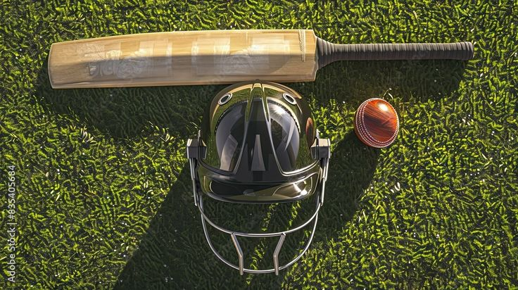
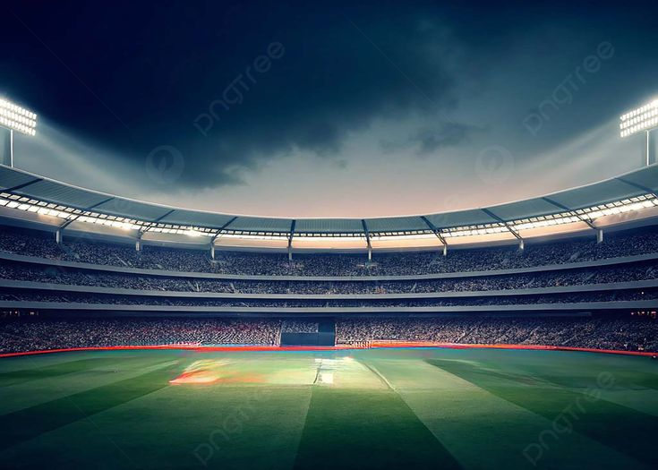

Cricket is more than a sport. It is passion, discipline and dedication. CricVault is built around the love for the game.

CricVault is a fictional cricket equipment brand created for players who love the game. We believe every cricketer deserves to find equipment that matches their playing style.
From cricket bats and batting gloves to helmets and protective equipment, CricVault brings cricket essentials together in one place.

Our mission is to make cricket equipment simple to explore and accessible to players at every level.
Whether you are practicing your first shot or preparing for your next match, CricVault helps you discover the gear you need.
Cricket equipment and essentials for players who love the game.
Explore equipment for different playing styles and skill levels.
Find cricket gear that suits your training and match-day needs.